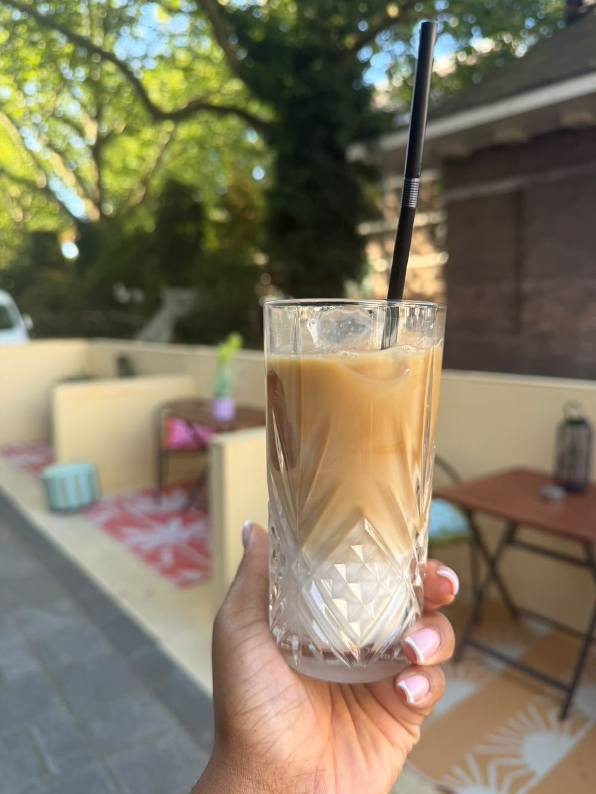

Elke vrijdag
Vanaf 15:00
Bar
Bar special
Elke vrijdag draait de bar een special. Wat het die week wordt, hoor je aan de bar — of je ziet het voorbijkomen op onze socials.
Bergweg 199A · Rotterdam
Tropisch café & bar in Rotterdam-Noord
Huisgemaakte sappen in de middag, cocktails als de zon zakt en muziek tot diep in de nacht. Kom binnen zoals je bent — de deur staat open van dinsdag tot en met zondag.
Welkom
Café United is de huiskamer van Rotterdam-Noord: warm, luidruchtig als het moet, en altijd gastvrij. Overdag schuif je aan voor iets lekkers, ’s avonds gaan de cocktails rond en blijft de bar open tot lang na het eten.
Wij houden van delen. De keuken maakt elke dag iets anders, er staan altijd bites op tafel, en achter de bar werken we zonder vaste kaart — zeg wat je lekker vindt en we maken er iets van. In het weekend gaat het volume omhoog en dansen we door tot half drie.
Laat honger?
Bij ons hoeft eten niet om negen uur klaar te zijn. De keuken draait door tot een half uur voor sluitingstijd — dus tot 00:30, en op vrijdag en zaterdag zelfs tot 02:00.
Binnenkijken
Groen, hout en warm licht. Een bar waar je makkelijk blijft plakken, een terras voor de zon en binnen genoeg ruimte om met een grote groep aan te schuiven.
Kom je voor één drankje of blijf je tot sluitingstijd? Allebei goed.
Wat er speelt
Elke vrijdag draait de bar een special. Wat het die week wordt, hoor je aan de bar — of je ziet het voorbijkomen op onze socials.

ReelUit de bar
Overdag schenken we tropische huisgemaakte sappen — fruit punch, awa di lamunchi — die het op het terras net iets beter doen. Zakt de zon, dan schuift de bar door naar de cocktails.
We werken zonder vaste cocktailkaart: zeg wat je lekker vindt en de bartender maakt er iets van.
Met een groep
Verjaardag, borrel met het team of een feest dat uit de hand mag lopen — vanaf 6 personen kun je reserveren en stellen we een voorstel op maat samen.